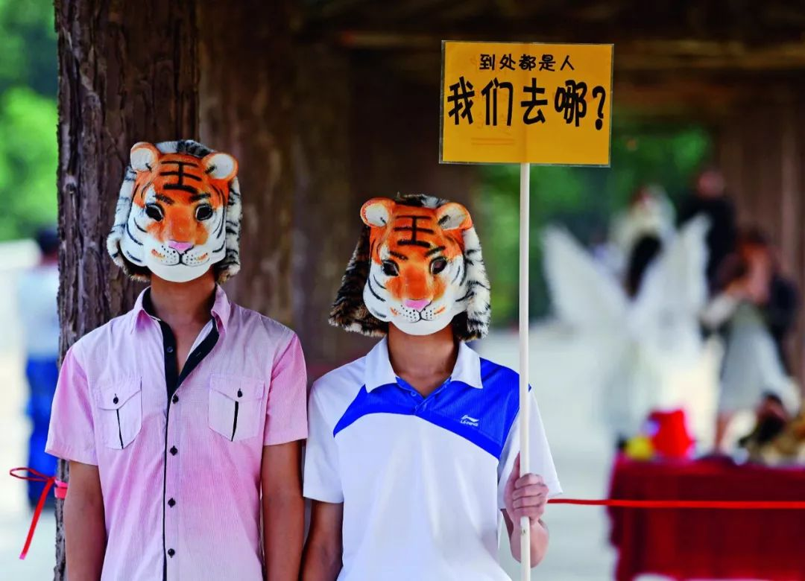

独家|重回武汉肺炎起点：卖野味的华南市场老板是谁？
原文链接 备份链接 本报记者 郝成 张家振 王迎春 武汉报道 目前确诊2000多人，引发全国高度关注，导致武汉封城的新型冠状病毒，被专家指来自于武汉市华南海鲜批发市场（以下简称“华南海鲜市场”）。该市场内的野生动物，则可能是最初病毒的携 …

严峻的疫情再次表明，
推动《野生动物保护法》修订已刻不容缓


致命的野味
*本刊记者/黄孝光*
发于2020.2.10总第934期《中国新闻周刊》
2019年12月，野生动物保护志愿者刘懿丹接到爆料称，武汉华南海鲜市场贩卖野味现象严重。当时她正在安徽举报一家借购销水产之名收购野生动物的商贩，因而没来得及前往武汉调查。
《中国新闻周刊》记者曾于2019年12月31日到华南海鲜市场实地采访，当时“武汉发生不明原因肺炎”的消息刚被证实。当天，记者看到这里照常营业，但有些人已经戴上了口罩。
网上有人透露，“华南海鲜市场表面卖海鲜，其实猫、狗、蛇、鳖，各种野鸡、土拨鼠都卖，还有梅花鹿、活猴之类的招牌。”但这里的多位商家当时都对记者表示，“市场只有海鲜是活物”“这里禁止屠宰，没有活禽”。
然而，源自武汉的新冠病毒感染的肺炎最终波及全国。
1月22日，中国疾控中心主任高福在国新办举行的新闻发布会上表示，新冠病毒来源于华南海鲜市场，野生动物在其中起了关键作用。国家卫健委高级别专家组组长钟南山则在接受央视采访时提到，从各方面的流行病学调查来看，新冠状病毒源头，可能是竹鼠、獾一类的野生动物。
随着疫情的迅速扩散，中国野味市场的真实状况也引起极大关注。多年来，像刘懿丹这样的志愿者四处奔走，与野生动物非法盗猎与售卖作斗争。他们认为，在这场危机面前，有关部门应尽快改进野生动物管理制度，打破非法盗猎和买卖屡禁不止的魔咒。
面对疫情持续，各项应急管理政策也相继出台。1月21日，中国市场监管总局、农业农村部、国家林业和草原局发布紧急通知，加强检验检疫力度，竹鼠、獾等野生动物饲养繁育场所封控隔离，禁止转运贩卖。5天后，三部门再发公告，自1月26日起至全国疫情解除期间，禁止野生动物交易活动。
有舆论认为，禁止交易只是暂时之举，要真正解决野味泛滥问题，“根子还是出在《野生动物保护法》上”。
中国现行的《野生动物保护法》于1989年3月开始正式施行，此后又经过多次修改。但一直有舆论质疑其重利用而轻保护，难以有效打击非法盗猎与贸易行为。中国疾控中心刘晓宇博士就曾发出警告：“野生动物源性疫病一旦发生，不仅不易控制，而且后果严重。《野生动物保护法》修改应该严格禁止猎杀猎食野生动物，防范野生动物源性疫病。”
时至今日，一语成谶。多位受访者认为，严峻的疫情再次表明，推动《野生动物保护法》修订已刻不容缓。
来自“华南海鲜”的致命病毒
华南海鲜批发市场地处武汉市江汉区，是华中地区规模最大的水产批发市场，占地面积约5万平方米。既有信息显示，该市场因安置过数百名下岗职工，多次被授予“武汉市文明市场”称号。
事实上，华南海鲜市场的环境一直被附近居民所诟病。有居民曾在人民网“领导留言板”留言，举报市场污水横流、垃圾满地、腥臭难耐，以及运海鲜的大货车任意占道停车等问题，但始终未得到回应。
杂乱的环境为野味的地下交易提供了便利。华南海鲜市场分东区和西区，共有摊位1000余个，其中西区部分摊位对外出售禽类、兽类食材。
早在2004年，华南海鲜市场就曾因公开出售果子狸引发争议。网友@麻辣小龙虾回忆，2004年上初中时，他每天都要路过该市场，“市场背面有一排门面，各种野生动物，鳄鱼、野鸡、孔雀、果子狸，还有很多叫不上名字的，大部分都是活的”。过去十几年，华南海鲜市场遭遇过多次投诉，但野味生意未受到影响。
工商资料显示，华南海鲜市场隶属于武汉华南置业集团有限公司（下称华南集团）。该集团成立于1995年9月，注册资本6000万，余甜与余其泽各持股50％。《中国经营报》曾报道称，余田和余其泽系姐弟关系，二人父亲名叫余祝生；后者是华南集团的创始股东，被当地人尊称为“大哥”。有猜测认为，华南海鲜市场得以长期售卖野味，可能与其股东背后有保护伞有关。
《中国新闻周刊》注意到，2019年9月25日武汉市市场监管局执法人员对华南海鲜市场售卖虎斑蛙、蛇、刺猬的几家商户进行地毯式排查，逐一检查其野生动物经营许可审批文件、营业许可证，严禁其经营未获审批的野生动物，未发现违法经营行为。
但2020年1月22日武汉市园林和林业局向媒体透露，该局从未向华南海鲜市场颁发野生动物经营利用许可证——这意味着该市场没有经营野生动物的资质。
“野味贩子可以用海鲜市场的名头打掩护，他们往往会有固定的地下销售渠道。”长期从事野生动物保护工作的田蒋明（化名）说，全球共有8条候鸟迁徙线路，其中3条经过中国。据他了解，候鸟在中国所过之处，几乎都有捕鸟者出没；被捕获的候鸟，其中就有一部分被送往华南海鲜市场售卖。
实际上，这里的野生动物远不止候鸟。网上流传的一张“大众畜牧野味”宣传单就来自华南海鲜市场的一家摊贩。宣传单罗列了上百种野生动物，均明码标价，单只价格从5元到6000元不等，并宣称“均可活杀现宰、速冻冰鲜、送货上门”。
记者查询发现，这家店铺的工商登记名称为“武汉市江汉区大众家畜批发中心”，系个体工商户，成立于2004年，2019年7月5日因未按规定报送年度报告，被列入经营异常名录。
2020年1月1日华南海鲜市场被关闭后，流行病学家曾对市场内水产商户进行采样检测，高度怀疑此次疫情与野生动物交易有关。
1月26日，中国疾控中心病毒病预防控制所发布消息称，该所从华南海鲜市场的585份环境样本中检测到33份样品含有新冠病毒核酸，并成功在阳性环境标本中分离病毒，提示该病毒来源于华南海鲜市场销售的野生动物。
国家林草局2018年发布的数据显示，湖北目前从事野生动物驯养繁殖的企业达500家，种类60多个，年产值3亿元。
在武汉，可以轻易找到卖野味的饭店。比如，香港路上的“闲云野鹤”，招牌菜就是美极乌梢蛇、美极大王蛇和盐焗大王蛇等蛇宴，同时还有红焖大雁鹅、刺猬鹧鸪汤等菜品。
公益组织“让候鸟飞”的志愿者岳桦曾于去年在武汉短暂停留，在天兴洲沙滩、武汉大学老牌坊和靠近市中心的洞庭路，都看到了卖野味的餐馆。“市中心能够卖野味，从侧面反映当地食用野味的现象比较普遍、监管很松懈。”岳桦向《中国新闻周刊》强调。
野味的教训
SARS最早的11个病例也大多有与野生动物的接触史。顺着这条线索，科学家很快在野生动物市场上的果子狸体内分离和检测到了和SARS病毒完全一样的病毒。
果子狸于是被视为SARS病毒的“元凶”。2004年年初，广东发布禁令，全面捕杀野生动物市场的果子狸，取缔野生动物交易，关闭野生动物市场。
中科院武汉病毒研究所石正丽认为，果子狸只是SARS的中间宿主。“对于一个新发的动物源病毒，我们必须找到它的源头，我们在学术上称为自然宿主。”石正丽团队经过13年的追踪，最终在云南洞穴内找到了携带相同冠状病毒的蝙蝠。
蝙蝠是唯一能飞行的哺乳动物，进化历史长达5000万年。在漫长的进化中，蝙蝠拥有了极快的新陈代谢速度和DNA修复能力，由此获得了强大的免疫系统，能携带许多病毒而自身安然无恙。因此，蝙蝠成为众多病毒的自然宿主。
近50年来，尼帕、亨德拉、埃博拉、马尔堡、SARS、MERS……这些致命病毒的自然宿主都是蝙蝠。
新冠病毒同样如此。1月21日，《中国科学》发文称，“由于武汉冠状病毒的进化邻居和外类群都在各类蝙蝠中有发现，推测该病毒的自然宿主也可能是蝙蝠。
新冠病毒是如何从蝙蝠传染到人身上的呢？据北京大学医学部病原生物学系教授彭宜红介绍，新冠病毒通常由蝙蝠等野生动物传染给哺乳动物，再从哺乳动物传染给人类：“携带病原体的动物分泌物，可经呼吸道黏膜进入人体。比如手上沾染了病原体，再去摸鼻子、揉眼睛，病毒都可以在黏膜细胞上大量增殖进入体内。”
然而，蝙蝠却常常成为餐桌上的食物。印尼当地流行蝙蝠汤，为了去除自带的尿骚臭，蝙蝠下锅前需要在醋、辣椒和大蒜的特殊酱汁中浸泡。据说，蝙蝠中体型最大的马来大狐蝠，被食用得已几乎灭绝。
在中国，很长一段时间里蝙蝠被用于中药材。据称，有明目，治疗咳嗽和疟疾的功效。此外，也屡有食用蝙蝠的报道。
野生动物是自然界病原体的储藏库，历史上众多重大疫病均来自于野生动物。中国医学科学院实验动物研究所所长秦川曾在《动物与新发传染病》一文中提到，自2001年以来，世界卫生组织确认的1100多起具有全球影响的传染病事件中超过70％是人兽共患传染病。
文章提到，除蝙蝠外，鼠类、鸟类、蛇类、青蛙、贝类等，都是常见的新发传染病的宿主。
“吃野生动物，是人类从来都没汲取的历史教训。”复旦大学历史学系教授高晞说。他提到，1988年上海人因为吃毛蚶，导致甲肝疫情，感染人数超过了30万。而就在去年，蒙古国一对夫妇食用未煮熟的土拨鼠内脏后死亡，北京两名游客同样疑因接触了旱獭而感染肺鼠疫。
2003年SARS疫情，广东扑杀了上万只果子狸和獾，然而当地的野味市场只是短暂沉寂。
当年5月SARS疫情宣告结束，8月国家林业局发布商业性经营利用驯养繁殖技术成熟的54种陆生野生动物名单，果子狸又名列其中。
广东省林业局随后向媒体表示，这54种陆生野生动物已获准在广东养殖和商业性经营利用，广东林业部门已开始接受经营利用野生动物的申请。
北轻南重
SARS过后，吃野味的风气迅速复燃。据悉，2004年全国拥有野生动物驯养繁殖场1.6万多家，年产值达200亿元。

2014年10月27日，云南省江城县执法部门查获的几只待售卖宰食的猕猴。 图/云南江城宣传部
有学者发现，2013年7月至2019年12月，全国比较受追捧的五类野味分别为蝙蝠、果子狸、竹鼠、穿山甲和麂子，对它们热情最高的十个省份依次是广东、江苏、山东、浙江、北京、河南、河北、四川、上海和福建。
排行榜首的广东，历来被认为是酷爱吃野味的地区。竹鼠、黄花雀、水蛇，这些其他地区少见的食材，频频出现在广东人的餐桌上。《清稗类钞》便曾写道：“粤人嗜食蛇，谓不论何蛇，皆可佐餐。其以蛇与猫同食也，谓之曰龙虎菜。以蛇与鸡同食也，谓之曰龙凤菜。”
“他们把禾花雀吃到快灭绝了。”据志愿者田蒋明了解，广东人认为禾花雀是“天上人参”，有补肾壮阳的功效。禾花雀曾经多如麻雀，冬天迁徙时会取道广西、广东、福建、香港等地。捕鸟人在途中设陷捕捉，然后贩卖到广东。2000年至2013年，仅媒体报道的查获捕杀禾花雀的案例就有28宗。最多时，广州和韶关查获的被捕杀禾花雀数量达到10万多只。
根据世界自然保护联盟评估，2004年至2017年的13年间，禾花雀的濒危等级从“近危”“易危”“濒危”到“极危”，经历了四次上调。世界自然保护联盟称，“在中国，为食用而对禾花雀进行的非法诱捕是主要威胁”。
不同地方的人，对野味有不同的偏好。在广东，除了畅销的竹鼠、禾花雀，当地人还认为穿山甲有“催奶”的功效。去年12月，田蒋明到江西赣州调查，看到当地不少村民家在晒“野鸟干”。据村民解释，“野鸟煲汤有营养，适合刚出生的小孩喝”。此外，他还发现江西、福建等地，流行“老鹰泡酒可以治头疼”的说法。
相比之下，北方的野味通常就地取材。“东北的餐桌上，熊掌、狍子、野猪比较常见。内蒙古人则喜欢抓候鸟吃，有一次我发现，当地一个候鸟家族中，28只被打得只剩下一只。”刘懿丹说。
几名受访志愿者都认为，全国野味版图呈现出“北轻南重”的特征，并形成由北向南的野生动物跨区域交易路线。
“从版图上来讲，内蒙古、宁夏、青海，包括黑龙江，自身消费并不多，但盗猎却很严重。”中国人与生物圈国家委员会委员周海翔告诉《中国新闻周刊》，内蒙古、黑龙江等地盗猎的动物通常会在河南、河北一带中转，再集中运往南方。
2019年12月31日，武汉华南海鲜市场西区，商铺照旧营业，第二天才正式休市整治。 摄影/本刊记者 彭丹妮
广东是全国野味的主要流入地。田蒋明称，宁夏的野鸡、天津及河北一带的候鸟、安徽的水鸟，多数是运往广东的。护鸟志愿者曾在天津、唐山等地巡查，发现大片非法捕鸟区域，当地农民用饲料喂养候鸟，催肥后再杀掉。
“浙江衢州一带盗猎的野味，不新鲜的通常运到湘西做腊肉，新鲜的则会运到广东去。”田蒋明说。
广东也是野味市场的集散地。北京草原之盟环境保护促进中心“荒野保护”团队发文指出，目前国内存在一条倒卖非法野生动物的利益链条：盗猎者将动物卖给中间收购商，中间商又卖给更大的收购商，大的收购商往往拥有林业部门颁发的野生动物驯养繁殖许可证，将非法捕捉和收购的野生动物洗白为合法产品，再堂而皇之地运送到各个市场。
据刘懿丹了解，这些大收购商多活动在广东，他们为不法商贩提供从订购到售卖的一条龙服务。
《中国新闻周刊》曾试图联系一名贩卖野味的商贩。“三十多斤活杀，安排发浙江，连夜杀好”“明天几十只继续安排开杀，发湖南”……在这名野味贩子的微信朋友圈里，充斥着各类野生动物的宰杀照片。
据悉，这名商贩经营的野味种类包括河麂、白额雁、野鸭、豹猫、黄麂、竹鼠、豪猪、野猪、野兔、野鸡、海狸鼠、土拨鼠、梅花鹿、斑鸠、麻雀、果子狸等。此外，他还能给动物园供应斑马、河马、长颈鹿等野生动物。
1月20日，受疫情影响，这名商贩所在的市场封市消毒，他在朋友圈评论道：“过年难道大家都吃青菜吗？又一场对于养殖业的浩劫来到了！”据悉，该商贩已于日前被公安部门抓获。
反盗猎困境
周海翔是中国最早一批反盗猎志愿者之一。他曾协助辽宁省蛇岛老铁山国家级自然保护区的执法人员开展护鸟工作。他说，“平时一天大约可收缴100多张鸟网，秋季每天可收缴2000多张，最多时高达三四千张。”
不过拆网的方法并不奏效。“上午拆完，下午他们又架上了，抓不到现行，拿他们一点办法没有。”周海翔后来组织摄友在山对面潜伏，通过拍照获取证据，曾协助执法人员一次抓捕12人。
从此，长焦镜头成为他的取证利器。他先后拍摄了投毒、下套等盗猎行为。“虽然我们费了很大力气，但盗猎被抓量刑是很轻的。因为他们投毒、架网、下套时，不会和猎物同时出现。”他无奈地说。
周海翔发现，最近5年，野生动物保护志愿者的队伍迅速壮大，涌现出“让候鸟飞”“反盗猎重案组”“懿丹野保特工队”等铁杆志愿者，不少人全职在做，靠众筹资金去维持，比如刘懿丹。
早年刘懿丹曾耗费大量精力拆网，后来她听从周海翔的建议，逐渐将重心转移到暗访取证上来。
2017年1月，在刘懿丹举报下，天津市一农贸市场查获近九百只“野味”，包括595只野山鸡、272只野兔、26只野鸭和1只豹猫。涉案人员事后未受到追责，警方解释称，问题不在数量，而在种类，所查获的野生动物均为“三有保护动物”。
三有保护动物即有重要生态、科学、社会价值的陆生野生动物。在相关法律中，属于“非国家重点保护野生动物”。
周海翔也遇到过类似困境。一次，他团队的几名志愿者乘长途大巴时发现，大巴司机不断与野味商贩联系，运送野生动物。
“盗猎的野生动物如何进入野味市场？长途大巴是重要的输送途径之一。只要查司机的通讯记录，势必能挖出一张跨越多省的贩卖网络。”周海翔随后将野味商贩的车辆信息提供给国家林业局。但因为这些动物以草原兔为主，不在国家重点保护动物之列，最终也未得到受理。
“举报野味窝点，基本都能成功，但是举报养殖场，成功率只有三成。”刘懿丹说。
今年1月，刘懿丹等人在浙江举报了10个公开贩卖野味的摊贩。根据《陆生野生动物保护实施条例》，经营利用非国家重点保护野生动物或者其产品的，应当向工商行政管理部门申请登记注册，取得相关野生动物经营利用许可审批文件。
这些摊贩均持有《浙江省陆生野生动物经营利用核准证》，然而执法人员现场调查发现，他们出售的所有野生动物及其制品都无合法来源、亦无检验检疫证。
理论上，从业者需要取得野生动物驯养繁殖许可证、野生动物生产经营许可证、卫生检疫许可证等证件，才能合法售卖野生动物。但事实上，一旦通过盗猎或其他不法渠道获得的野生动物流入拥有上述证件的人员手中，就能够披上“合法”的外衣，堂而皇之地进入市场。
“他们利用《浙江省陆生野生动物经营利用核准证》作为护身符，行为看似合法，实际上在大肆收购、出售非法狩猎来的野生动物，长期无人发现，无人查处打击。”田蒋明说。
有分析认为，在保护野生动物方面，国家林草局应该承担更多的责任。该局2019年发布的《国家林业和草原局关于促进林草产业高质量发展的指导意见》在“重点工作”一项提到：以非重点保护动物为主攻方向，培育一批特种养殖基地和养殖大户，提升繁育能力，扩大种群规模，增加市场供给。
修法刻不容缓
中国现行的《野生动物保护法》于1988年制定通过，翌年实施。此后几经修订，其中2004年、2009年两次修正属于微调，唯2013年启动的修法动作最大、改动最多，至2016年7月才定稿。
2016年《野生动物保护法》草案的公布，在法学界和动物保护圈引起强烈争议。不少人认为草案继续视野生动物为一种经济资源，并承认了“利用”的合理性，实为“利用法”而非“保护法”。
中国野生动物摄影师奚志农在接受《中国新闻周刊》采访时表示，中国的“保护”概念始于1956年广东鼎湖山自然保护区的建立。“但这种‘保护’是建立在‘利用’的基础上的。受这种观念影响，中国无论是从哪个途径得来的野生动物都会进入市场流通环节——这是最可怕的。”他说，“走到今天，我们身边这个以‘利用’为前提的思路还没有改变，这也是中国野生动物保护的现实。”
长期关注野生动物权益的公益组织“自然之友”，曾受邀参加全国人大组织的座谈会。“自然之友”总干事张伯驹向《中国新闻周刊》回忆，彼时会上，与会者分为支持保护与支持利用两派，而后者的声音明显占了上风。
当时，“自然之友”针对信息公开、公众参与、野生动物利用等几个方面，在修订草案公开征求意见期间提交了修改意见。“但很遗憾，新《野生动物保护法》对公众意见的吸收极为有限，在信息公开和公众参与方面几无建树，在争议最多的野生动物利用问题上，也没有实质性的改变。”张伯驹说。
“一方面，它对野生动物保护像是提出了更多要求；另一方面，它在开发利用尤其是商业性利用野生动物方面继续向前迈进，而维持二者平衡的，只是‘合法’与‘非法’间那条含混而脆弱的界线。”洪范法律与经济研究所所长梁治平曾经撰文批评，“因为这一系列内在矛盾，新《野生动物保护法》恐怕最终难逃自我挫败的命运。”
北京大学保护生物学教授吕植则认为，人类从未放弃对野生动物的利用，但“利用”的内涵已经改变：“我们不应该停留在工业化时代对野生动物消耗性的、肉体上的利用，而应该强调生态功能、生态效益上的利用。”
在具体的利用事项上，目前《野生动物保护法》涉及的主要是三类行为：野外猎捕、人工繁育和经营利用。在具体的法条上，无论国家重点保护动物还是非国家重点保护动物（包括地方重点保护动物和三有保护动物），在满足规定条件下，均可被捕猎、驯养或经营。此外，不在上述名单上的动物，则没有任何明文限制。
据周海翔介绍，实践中，不少无法实现人工繁殖的物种也被列入许可范围。以鹭鸟为例，它需要在树林筑巢产卵，无法在人工养殖场繁育，因而获得许可的养殖场，种源均来自野外。
2014年，广州市林业部门在当地一家养殖场发现约1.5万只来自安徽的鹭鸟，密密麻麻被囚在铁笼中。据周海翔了解，这些鹭鸟来自安徽的4家养殖场，而养殖场的鸟蛋盗猎于辽宁，“安徽人每年都会到辽宁，指挥训练好的猴子上树偷蛋，再运回去孵化”。
“法律鼓励大家繁殖利用，但是很多野生动物繁殖不出来，即便可以，代价也太高。比如斑头雁，养四五年才会下蛋，而且下蛋不多，所以斑头雁的种源，往往也都是从野外偷来的。”刘懿丹解释说，被售卖的野生动物，来源很难确定，以至于取得证件的商户往往会以此为掩护，做非法野生动物贸易的生意。
“总体上来说，驯养繁殖这个行业至少门槛应该提得非常高，而‘吃’我是坚决反对的。”吕植说。她认为食用野生动物是社会陋习：“我们已经基本不需要通过野生动物来补充蛋白质和营养了。吃野味，很多时候是一种出于炫耀身份或迷信某种功能的消费。”
吕植进一步提出“全面禁食野生动物”的倡议。“根据现行《野生动物保护法》，不管你是人工驯养的还是野外捕捉的，342种国家重点保护动物不能吃。” 她说，“现在需要做的，是把禁止食用的范围扩大到所有的野生动物。”
吕植强调，从公共卫生风险角度，“病原体并不挑剔宿主动物是否受保护，而恰恰是不在重点保护名录上的动物，蝙蝠、果子狸、旱獭、刺猬……成为动物与人类共患疾病的自然宿主或中间宿主。”
“经历了上次非典和野保法的修改，我知道就目前情况来说，要实现长期禁止商业利用野生动物资源，难度依旧很大。但我相信，在疫情肆虐这个当口，舆论的赞同呼声会比那时候要强得多。”周海翔说。
多位受访者认为武汉疫情当前，吸取教训、推动《野生动物保护法》修订刻不容缓。
1月23日，由吕植发起，19名来自全国高校与科研院所的院士、学者联名签字倡议，由全国人大紧急修订《野生动物保护法》，将公共健康安全的内容纳入到野生动物利用的条款中。
“法律和管理措施的改变，将规范和引导人们的行为，这是底线。而真正的改变，来自人心。”吕植认为，从SARS到此次的新冠肺炎，自然在不断提醒人类重建敬畏，不打破人与自然之间、人与野生动物及其病原体之间的平衡，否则健康风险不可估量。
值班编辑：庄梦蕾

推荐阅读
▼


原文链接 备份链接 本报记者 郝成 张家振 王迎春 武汉报道 目前确诊2000多人，引发全国高度关注，导致武汉封城的新型冠状病毒，被专家指来自于武汉市华南海鲜批发市场（以下简称“华南海鲜市场”）。该市场内的野生动物，则可能是最初病毒的携 …
原文链接 备份链接 文|王一然 编辑|胡大旗 “这道菜叫什么？” “不能说。” 这家餐厅看上去没有任何特别，普通大排档，招牌上都是家常菜和烧烤类食物，夏日，外面摆满塑料椅子，一楼是大厅，二楼有五六个包间。林建安30岁出头，四五年前负责公司 …
原文链接 备份链接 SARS之后，我们以为人们对野味的消费会减少很多，没想到最近几年，这种需求又在不断增加，消费的种类也呈现不断扩大趋势。然而，从猎捕到运输、加工、售卖下的每个环节，也使得病毒在传播过程中不断发生变异。 记者 | 王珊 王 …
原文链接 备份链接 02.02.2020本文字数：3224，阅读时长大约5.5分钟 导读：病毒传播路径的信息，为何在病毒全面开花扩散之后，源源不断地发表在论文上。 作者 | 第一财经 马晓华 从新型冠状病毒开始踏足武汉，到蔓延至全国甚至 …
原文链接 备份链接 “从严格意义上说，病毒不能算是活着。病毒非生非死，存在于生命与非生命的边界之上。若是处于细胞外，病毒只是存在而已，什么也不会发生。一旦病毒进入细胞，就变成了‘特洛伊木马’。病毒在繁殖时看起来是活着的，但从另外一个角度 …